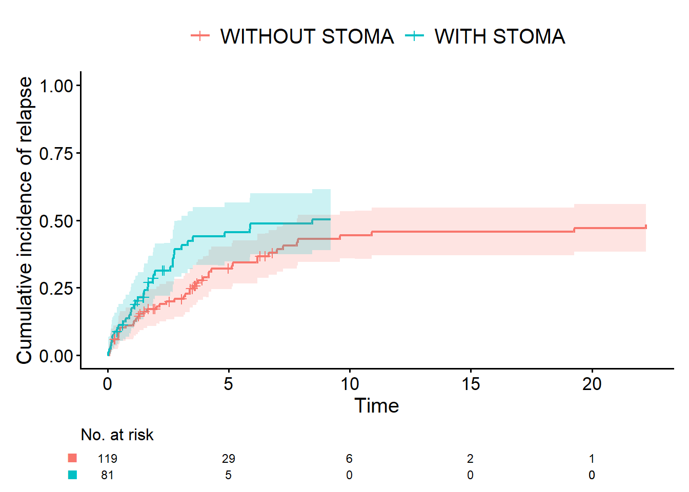

library(survival)
library(cifmodeling)
survfit(Surv(time, status) ~ stoma,
data = dat
)
cifplot(Surv(time, status) ~ stoma,
data = dat,
outcome.type = "survival",
label.y = "Overall survival"
)
cifplot(Event(time, status) ~ stoma,
data = dat,
outcome.type = "survival",
label.y = "Overall survival"
)A First Step into Survival and Competing Risks Analysis with R
生存時間解析の落とし穴は、イベント定義とコーディングにあります。データ収集の考え方から競合リスク解析のRデモまでを扱うcoffee-chat guide。生存時間データに初めて向き合う方向けです。

Study Design IV − A First Step into Survival and Competing Risks Analysis with R
Keywords: bias, R simulation, study design, survival & competing risks
調査項目とデータの型
私「あれ、懐かしい。私が小学生の頃に買ったルービックキューブじゃない、そんなのやってるの。時間があるならちょっといい？がんサバイバーの復職率を調査する話があったでしょ。患者さんに送る調査票をつくってみたんだけど、見てくれる？あ、この前のRも参考になったよ、調査結果が想像できた」
お父さん「どれどれ」

お父さん「復職率の定義はなに？」
私「どういうこと？」
お父さん「調査票を見ただけじゃ、この質問項目で十分かどうかわからないってこと。手術日から調査日の間に、復職を希望した患者さんが、希望どおり復職できたかどうかを調べたいのかな？」
私「それもいいんだけど、復職を希望してないって回答した患者さんのなかに、会社の方針などの理由で復職をあきらめた患者さんも含まれるかもしれない。だから、復職率を計算するとき、分母は、復職を希望した患者さんじゃなくて、手術を受けた患者さん全員にしたいわ。そうした方が、就労実態がわかりやすそうだもの」
お父さん「手術日から調査日の間の復職を調べたいかどうかについては？」
私「えーっと。調査票に回答してもらうタイミングは患者さんによってまちまちになりそうだから、調査日は使いたくない。1年以内に復職できるかを定義にするのはどうかな？あ！ 復職日を答えてもらえばいいのかも！」
お父さん「復職日はあった方がいいよね。そうすると、復職状況から解析用の“変数”をつくるには、分類データと生存時間データの2通りが考えられる。それはさておき、手術後に亡くなった場合はどうするの？」
私「入院中に亡くなった場合は、調査対象に含めない。でも、術後再発による死亡を分母から除外するのは変な気がする」
お父さん「そうだね。除外するとバイアスが生じると思う。ターゲットにしている集団からずれちゃうからね。がん患者を追跡するような研究をするとき、大切なことが3つある。1つ、どのタイミングを時間原点にするかを決める必要があるよね。この場合、時間原点は退院日にするといい。2つ、追跡期間の目標を設定して、その時点までは、可能な限り情報を収集すること。情報が取れないとバイアスが生じる原因になる。3つ、時間原点後に生じたイベントは除外してはならない」
- 時間原点を定義する
- 追跡期間の目標を設定し、その時点までは可能な限り情報を収集する
- 時間原点後に生じたイベントは除外したり、層別に用いたりしない
私「後からバイアスがあるとか言われたくないもんね。ふむふむ」
お父さん「以前、“PECO”という要素を使って臨床疑問を構造化したらってアドバイスしたよね。Pが根治切除後の直腸がん患者さんだったら、その集団をもれなく調査しないといけない」
私「分類データと生存時間データってなに？」
お父さん「これもこの前話したでしょ。統計解析を行ううえで基本になるのが“データの型”で、分類データと生存時間データはその種類だよ」
私「いや、先週の話だし、私忙しいし」
お父さん「調査票を少し手直ししたから、これを使ってもう一度話すよ」

お父さん「分類データは、この場合、患者のアウトカムを分類したものだよ。1年以内に復職したかどうかをアウトカムにしたらどうかなっていってたよね」
私「うん」
お父さん「たとえば、“1年以内に復職あり”を分類1、“1年以内に復職なし”を分類2にしたら、2値データと呼ばれる分類データの一種になる。これは調査票から調べられるし、復職率も計算できるよね」
私「うん。1年以内の死亡を復職なしって扱えばね」
お父さん「でも就労状況を集計するときは2値データではなく、3カテゴリの分類データの方がいい。“1年以内に復職あり”を分類1、“1年以内に復職なし（死亡以外の理由のため）”を分類2、“1年以内に復職なし（死亡のため）”を分類3にしたらどう？もっと詳細にアウトカムが把握できるでしょ」
私「うんうん。じゃあ生存時間データはなんだっけ？OSってこと？」
お父さん「たしかに全生存期間（OS）は生存時間データの一種だよ。名前から誤解されがちだけど、それ以外にもあるんだ。生存時間データがどういうものかっていうと、時間原点から“イベント”までにかかった時間を表す変数のこと」
私「復職状況も生存時間データになるの？」
お父さん「そうすることもできる。この場合は、“退院日から復職日までの期間”を考えればいい。たとえばね、4月1日に退院して、4月30日に復職したとしたら、この患者の生存時間データは30-1+1=30日になる。これだとただの日数だから、連続データとの違いがはっきりしないけど、生存時間データの本質は、打ち切り （censoring）があることなんだ。調査日までに復職しなかった場合、退院日から復職日までの期間は存在しないでしょ」
私「まあそうだけど、それでいいんじゃないの？」
お父さん「統計解析のソフトウェアを使うとき一工夫が必要で、調査日の時点で復職しなかった、つまり復職の追跡が打ち切られたという情報を、入力してあげなければならない。だから生存時間データは、2つの変数が組になっているんだ。
- 時間変数
- イベント変数
お父さん「イベント変数は、いわゆる生存時間データの場合は、イベントが観察されたか、打ち切りになったかを表す2値データ。時間変数は、この場合は“退院日から復職日までの期間”か“退院日から調査日までの期間”のどちらかになる」
生存時間データの入力
生存時間データは2つの変数の組であるため、Rの関数に入力するときもペアで指定する必要があります。survivalパッケージのsurvfit()やcoxph()では、実は入力専用の関数Surv()を用意しています。入力の仕様はパッケージによってまちまちで、たとえばmetsパッケージではEvent()を別に定義して用いています。cifmodelingパッケージのcifplot()は、Surv()とEvent()の両方に対応しています。
私「えーっと、イベント変数は2値データってことは、すべての患者さんで復職か、打ち切りかの2択しかないってこと？死亡はどうなるの？」
お父さん「いま話したような扱いをするなら、死亡した患者さんは、打ち切りという分類に含まれることになる。ただし、競合リスク （competing risk）という別の扱い方もある。簡単にいうと、それが起こると研究で調べたいイベント（たとえば死亡や復職）が観察されなくなる、競合するイベントのことだよ」
私「ああ、死亡が競合リスクってことね」
お父さん「生存時間データは、英語ではsurvival data以外にtime-to-event dataっていったりもするんだけどね。時間とともに起きるイベントって、生存か死亡かだけじゃないでしょ。競合リスクを解析できるようにしたのが競合リスクモデルなんだ。この場合、さっきのイベント変数は、イベント、競合リスク、打ち切りという3カテゴリを表す変数になる。イベント変数はこんな感じでコーディングされる」
- イベント変数=0: イベントが観察される前に打ち切りになった
- イベント変数=1: イベントが観察された
- イベント変数=2: イベントが観察される前に競合リスクが生じた
私「そうなんだ。イベント変数ってなんとなく0と1だと思ってたわ」
生存時間解析と競合リスク解析
お父さん「競合リスクとあわせて知ってほしいのが、Kaplan-Meier曲線が生存曲線じゃなくなるってこと」
私「どういう意味？」
お父さん「ほら、生存と死亡しかなかったら、死亡確率の裏返しが生存確率でしょ。でも死因の内訳、たとえば原病死と他因死があって、他因死が競合リスクだったらどう？原病死の確率の裏返しは生存確率にならない。だから、競合リスク解析では、Kaplan-Meier曲線じゃなくてAalen-Johansen曲線を使う。ちょっとRの結果をみてほしい」
シミュレーションデータ（再発あり）の生成
前回より少しだけがんの臨床研究を意識して、シミュレーションデータにおける、全生存期間（OS）・無再発生存期間（RFS）・累積再発率（CIR）の違いをみてみましょう。CIRの解析では、再発の前に死亡した患者が存在するため、その扱いを決める必要があります。これを競合リスク（competing risk）といいます。
以下のコードでは、死亡だけではなく再発を伴った生存時間アウトカム3種類をRで生成する「関数」generate_data()を定義しています。OSのイベントは「死亡」、RFSのイベントは「死亡と再発」です。CIRのイベントは「再発」ですが、死亡を競合リスクとして扱います。なお、generate_data()やこのシミュレーションデータは、今後の解説でも再利用する予定です。
ストーマ保有：2項分布（
rbinom）から生成した2値データ生存時間：指数分布（
rexp）から生成した生存時間データ（t_relapse, t_death, t_censoringの乱数から計算）
前回、競合リスクのない生存時間データを要約しましたが、そこで用いたのはKaplan-Meier曲線でしたよね。それに対して、競合リスク解析では、Kaplan-Meier曲線ではなく、Aalen-Johansen曲線を用いるのが正式です。
generate_data()のコードはこちら（データ生成に使用）
generate_data <- function(n=200, hr1, hr2) {
stoma <- rbinom(n, size = 1, prob = 0.4)
sex <- rbinom(n, size = 1, prob = 0.5)
age <- rnorm(n, mean = 65 + 3 * stoma, sd = 8)
hazard_relapse <- ifelse(stoma == 1, hr1*0.10, 0.10) # 再発のハザード（大きいほど早く起こる）
hazard_death <- ifelse(stoma == 1, hr2*0.10, 0.10) # 死亡のハザード（大きいほど早く起こる）
hazard_censoring <- 0.05 # 打ち切りハザード（群に依存しない）
t_relapse <- rexp(n, rate = hazard_relapse) # 再発までの潜在時間
t_death <- rexp(n, rate = hazard_death) # 死亡までの潜在時間
t_censoring <- rexp(n, rate = hazard_censoring) # 打ち切りまでの潜在時間
## --- 全生存期間（OS） ----------------------------------------
time_os <- pmin(t_death, t_censoring)
status_os <- as.integer(t_death <= t_censoring) # 1 = 死亡, 0 = 打ち切り
## --- 無再発生存期間（RFS） -----------------------------------
time_rfs <- pmin(t_relapse, t_death, t_censoring)
status_rfs <- integer(n)
status_rfs[time_rfs == t_relapse & time_rfs < t_censoring] <- 1 # 再発
status_rfs[time_rfs == t_death & time_rfs < t_censoring] <- 1 # 死亡
## --- 累積再発率（CIR） + 競合リスク --------------------------
time_cir <- pmin(t_relapse, t_death, t_censoring)
status_cir <- integer(n)
status_cir[time_cir == t_relapse & time_cir < t_censoring] <- 1 # イベント1: 再発
status_cir[time_cir == t_death & time_cir < t_censoring] <- 2 # イベント2: 競合リスクとしての死亡
## --- データフレームにまとめる --------------------------------
dat <- data.frame(
id = 1:n,
sex = factor(sex, levels = c(0, 1), labels = c("WOMAN", "MAN")),
age = age,
stoma = factor(stoma, levels = c(0, 1),
labels = c("WITHOUT STOMA", "WITH STOMA")),
time_os = time_os,
status_os = status_os,
time_rfs = time_rfs,
status_rfs = status_rfs,
time_cir = time_cir,
status_cir = status_cir
)
return(dat)
}
全生存期間（OS）のKaplan-Meier曲線
OSとRFSは通常の生存時間データですから、前回と同様にcifmodelingパッケージのcifplot()を使って、Kaplan-Meier曲線で記述します。まずはOS。
Rコードと結果はこちら
# devtools::install_github("gestimation/cifmodeling") #インストールが必要なら実行
library(cifmodeling)
set.seed(46)
dat <- generate_data(hr1=2, hr2=1.5) #再発ハザード比2, 死亡ハザード比1.5のデータ生成
cifplot(Event(time_os, status_os) ~ stoma,
data = dat,
outcome.type = "survival",
label.y = "Overall survival"
)
無再発生存期間（RFS）のKaplan-Meier曲線
次にRFSです。Event()で指定する変数以外は変わりません。
Rコードと結果はこちら
cifplot(Event(time_rfs, status_rfs) ~ stoma,
data = dat,
outcome.type = "survival",
label.y = "Relapse-free survival"
)
累積再発率（CIR）のAalen-Johansen曲線
以下のコードでは、Event(time_cir, status_cir)のコーディングによって競合リスクを入力しています。
status_cir=1: 関心のあるイベント（再発）status_cir=2: 競合リスク（再発を経験しない死亡）status_cir=0: 打ち切り
さらにoutcome.type = "competing-risk"を指定することで、Aalen-Johansen曲線を描いています。
Rコードと結果はこちら
cifplot(Event(time_cir, status_cir) ~ stoma,
data = dat,
outcome.type = "competing-risk",
label.y = "Cumulative incidence of relapse"
)
私「CIRの解析に使ったのがAalen-Johansen曲線ね。でもこれって、Kaplan-Meier曲線のY軸を逆さにしただけじゃないの」
お父さん「グラフ上は見分けられないからそう思っても仕方ないよね。でもこのふたつは区別してほしい。
生存曲線（Kaplan-Meier曲線）と累積発生曲線（Aalen-Johansen曲線）は別の統計手法なので 競合リスクがあるときはAalen-Johansen曲線を用いる。
ちなみに、relapse-free timeじゃなくてcumulative incidence of relapseを使いたいっていったけど、それは累積発生曲線（cumulative incidence curve）が、専門的にはAalen-Johansen曲線と同じ意味だからなんだよね。やろうと思えばCIRを解析するとき、Kaplan-Meier曲線を計算することもできるよ。このとき、再発を経験しない死亡は、競合リスク（status_cir=2）ではなく打ち切り（status_cir=0）として入力することになる。でも本来なら、死亡は、追跡期間終了や追跡不能による打ち切りとは、違う転帰だよね。だから競合リスクとして扱うのが正しい。
私「じゃあ死亡と再発を両方イベントにしたRFSを解析するのは間違い？」
お父さん「もちろん間違いじゃないよ。でも、RFS曲線の差は、再発だけでなく他因死の影響も反映しているよね。だから、さっきいったみたいに、OS、RFS、CIRは使い分けが必要になる」
このエピソードに関係するクイズです
CDISC ADaM ADTTE（Analysis Data Model for Time-to-Event Endpoints）は、製薬企業が行う臨床試験データの標準規格です。この規格では、打ち切りにはCNSRという変数名の変数を用いることになっています。打ち切りを表すコーディングは、次のうちどちらでしょう。
- CNSR=0
- CNSR=1
答えはこちら
- 正解は2です
CDISC ADaM ADTTEでは、1がTRUEを表しています。Event()やSurv()など多くの統計パッケージのデフォルトでは、イベント=1、打ち切り=0というコーディングを想定しています。CNSRをそのまま用いることはできません。
エピソード、用語集、Rスクリプト
- A Story of Coffee Chat and Research Hypothesis
- Data Have Types: A Coffee-Chat Guide to R Functions for Common Outcomes
- Outcomes: The Bridge from Data Collection to Analysis
- A First Step into Survival and Competing Risks Analysis with R
- When Bias Creeps In: Selection, Information, and Confounding in Clinical Surveys
- Statistical Terms in Plain Language
- study-design.R